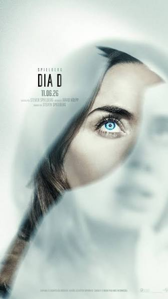

Dia D, um filme sobre a Verdade Oculta?
"Eram os Deuses, Astronautas?"
— Erich von Däniken
O filme começa com uma perseguição implacável e eletrizante, onde cada segundo parece ditar o destino dos personagens em meio a cenários desoladores. Conforme a tensão aumenta, pistas enigmáticas começam a surgir na tela, sugerindo que os mistérios da trama vão muito além de um simples confronto de ação.

Essa sequência inicial serve como o gatilho perfeito para introduzir a tese central da obra, conectando o suspense moderno aos segredos ancestrais defendidos por Erich von Däniken. O espectador é imediatamente arrastado para uma jornada reflexiva, questionando se os vestígios deixados por antigas civilizações e as tecnologias inexplicáveis do passado seriam, na verdade, a prova viva de que nunca estivemos sós no universo.